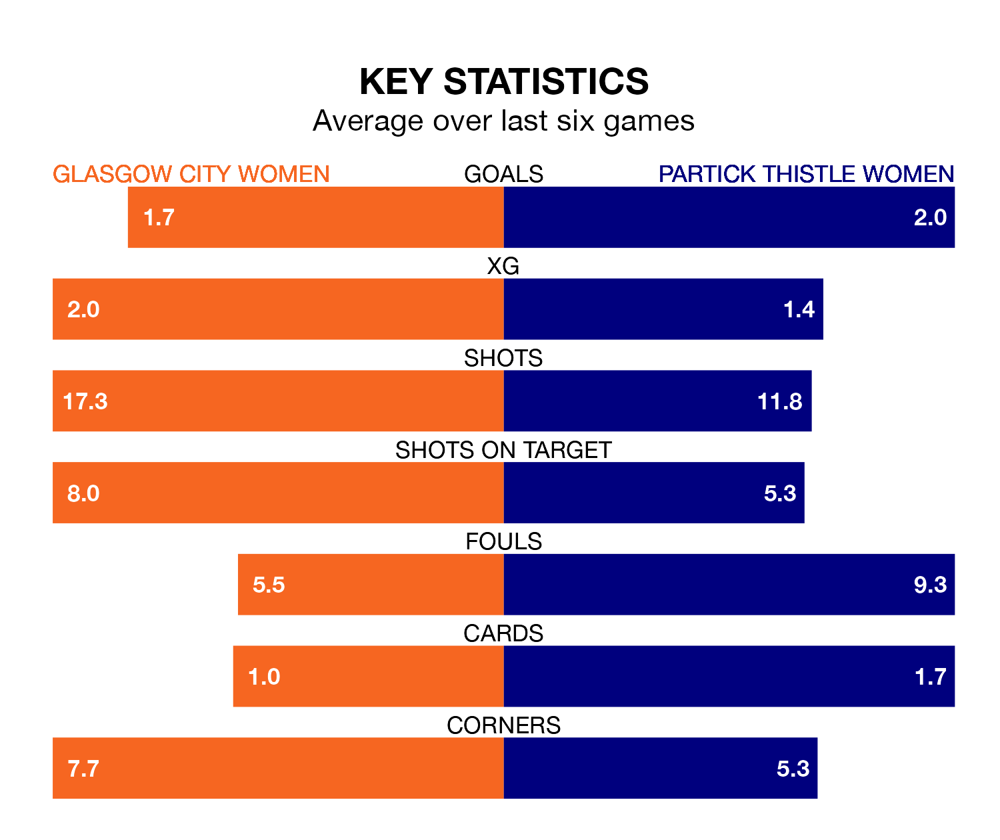

Glasgow City Women host Partick Thistle Women in Sunday lunchtime's match at Petershill Park looking to bounce back from defeat last time out in SWPL 1.
Glasgow City, who sit third in the league after 15 games, fell to a 1-3 away defeat to Hibernian Women on December 10.
They face a Partick Thistle side who also lost their last match, a 4-1 defeat to Hearts Women, and who sit fourth in the table.
With 28 goals in 15 games so far this season, Partick Thistle are scoring at below the league average rate with 1.9 goals per game. But they are conceding fewer than average too, letting in 21 goals at a rate of 1.4 per game.
Glasgow City, meanwhile, are above average scorers, with 2.5 goals per game, compared to a league average of 2.2. They have conceded 0.7 goals per game.
In Lee Alexander, the home side can rely on one of the league's safest pair of hands. She has kept four clean sheets in her nine appearances this season in SWPL 1.
In Thistle's net, Megan Cunningham also has four clean sheets in nine games. She has conceded a goal every 57 minutes, twice as often as the 116 minutes between goals for Alexander.
Glasgow City are in good form in SWPL 1, with four wins and a draw from their last six games.
With four wins and two losses over that period, the visitors' form is slightly worse – they have taken 12 points from 18, compared to Glasgow City's 13.
Over the last two years, Glasgow City and Partick Thistle have played each other on six occasions. Glasgow City won all of them.
On average, Glasgow City scored 3.5 goals and Thistle 0.5 in those matches.
Their last meeting was on August 20, when Glasgow City won 3-0 away.
